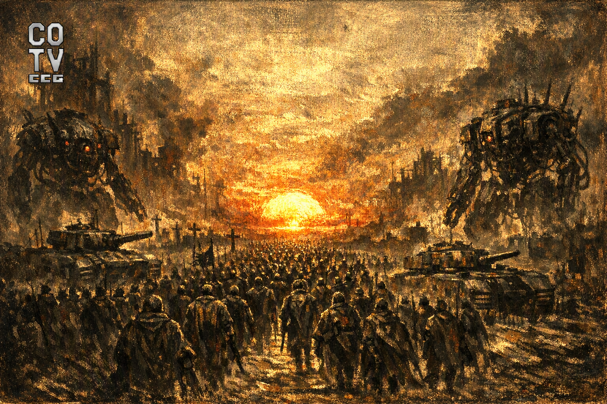
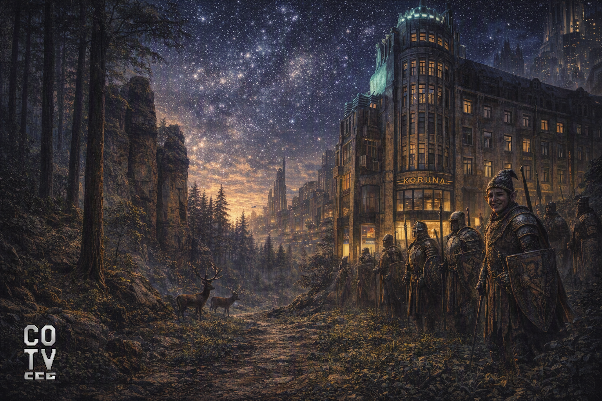
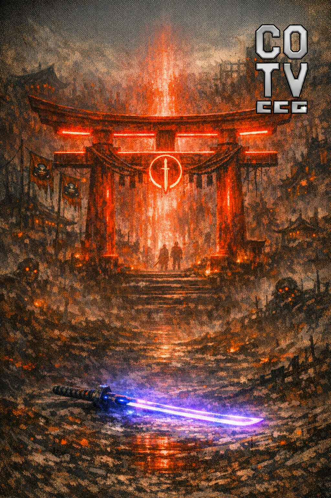
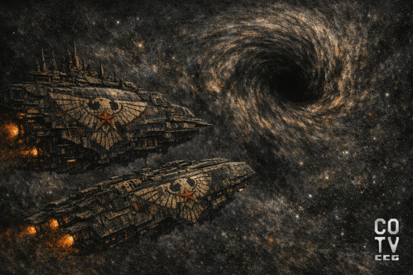
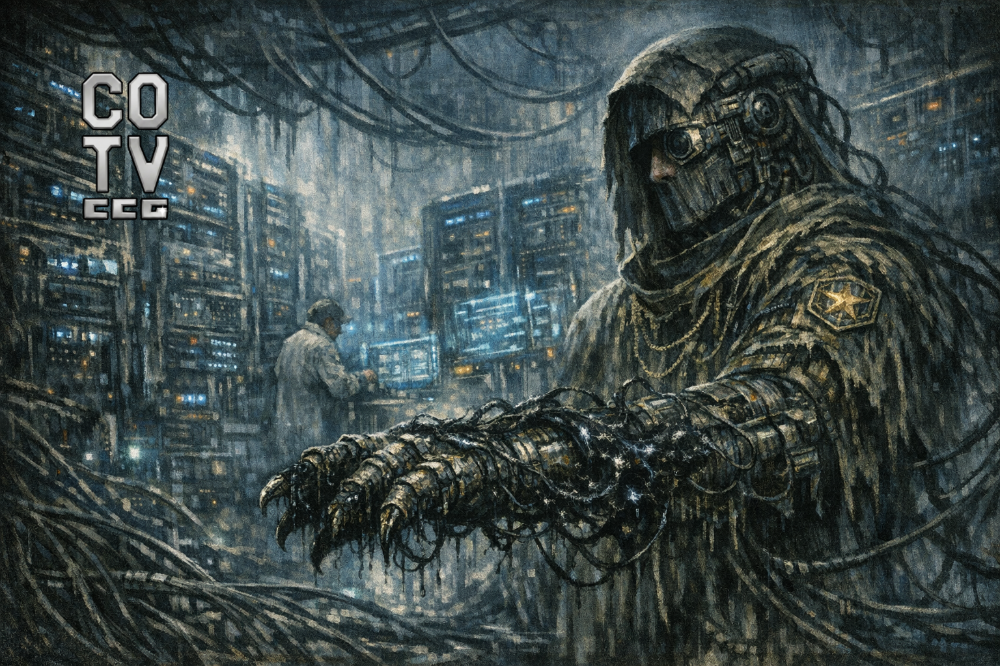
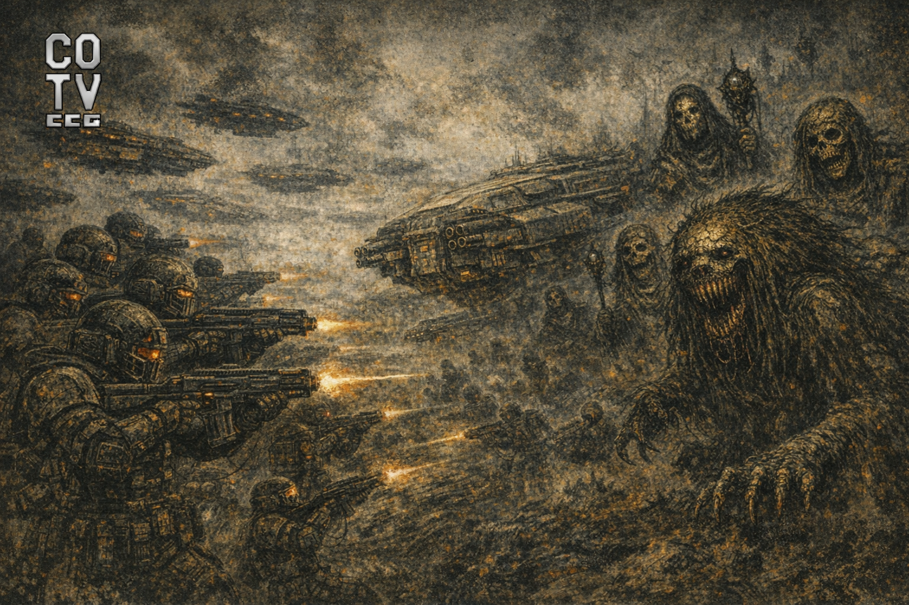
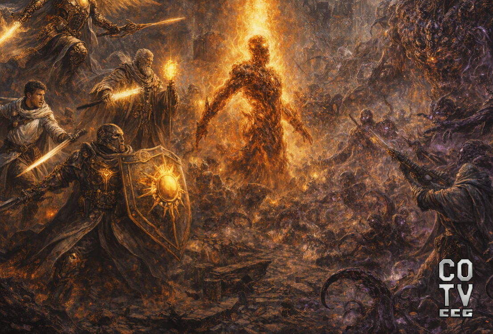
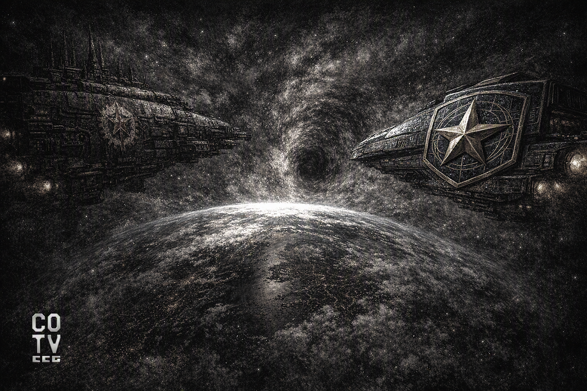

CHRONICLES OF THE VOID
WHEN THE SILENCE OF SPACE FINALLY SPOKE
A dark sci‑fi collectible card game & universe of sacred machines, forgotten empires and horrors beyond reality.
ENTER THE VOID
Long ago, before the sky became a filter and the Sun a commodity, humanity lived under the illusion of stability. Disasters came, but they were distant. Wars burned, but always somewhere else. Climatic upheavals, energy crises, and collapsing economies belonged to the next decade, the next generation, someone else’s government. Humanity learned to survive by learning not to see the consequences. The twenty-first century did not end in an explosion. It ended in comfort.

Though nations remained etched upon maps, their anthems still echoed across stadiums, parliaments convened, and laws continued to be passed—true power had already shifted elsewhere. It passed into the hands of those who could command energy, govern the flow of information, and harness the fear of chaos itself. Thus emerged the New World Order—silent, contractual, and ruthlessly efficient. Corporations did not seize control through violence. They were invited—entrusted with the burden of keeping the world alive. And so began the Corporate Age of Earth.
Megacorporations were born of necessity. At first, they emerged as sprawling conglomerates; in time, they evolved into sovereign entities—commanding their own infrastructure, security forces, and legal autonomy. Among them, one quickly rose above the rest — Apex Global. In its early days, it managed energy grids, orbital logistics, and communication networks. When nation-states faltered in times of crisis, Apex offered solutions—swift, uncompromising, effective. And the world accepted them. With every contract, state authority diminished. With every exception, governments surrendered another fragment of responsibility. Apex did not rule. Apex ensured survival.
At the same time, in the silence of server halls and research campuses, another power was taking shape. Xenotronic did not begin with weapons or armies, but with a promise—optimization, expansion into the cosmos, and the preservation of humanity itself. Neural interfaces, assisted cognition, augmented consciousness. The human mind, stripped of fatigue, emotion, and irrationality, became part of a greater network. At first, it was voluntary. Then, it became inevitable. The world had grown too complex to be governed by human hands alone. Algorithms were faster. More precise. Colder. And that was exactly what was required. Yet Earth did not unite. It fractured.
The eastern powers, together with parts of Europe, formed the bloc known as Eurasia‑Kord — pragmatic, industrial, and unforgiving. While other regions speculated and optimized, Eurasia built. Vast factories. Heavy industry. The mass production of weapons and machines. Discipline replaced ideals. Order outweighed freedom. Survival surpassed humanity itself.
On the fringes of this emergent world—within mountains, ruins, forgotten regions, and autonomous zones where corporations deemed investment unprofitable—something else began to take root. Communities bound not by contracts, but by blood. By memory. By honor. The Clans rejected both digital governance and corporate arbitration. They were slow, archaic, and inefficient. Yet in an age where the world was dissolving into systems and nodes, they preserved the one thing no algorithm could ever truly replicate: The will to die for a promise.

Orbital cities rose around the planet, alongside industrial complexes processing regolith on the Moon and extraction stations scattered across the asteroid belt. Mars became an operational zone, not a home. Apex Global controlled transport and supply chains. Eurasia‑Kord constructed vast defensive infrastructures. Xenotronic interlinked the minds of colonists with the network, suppressing panic and preempting revolt. Humanity was no longer whole. It had become a fragment of the system— a node, a stream of data within an endless machine of expansion.
In the Asia‑Pacific sphere, a singular response emerged against this soulless world. Ronin‑Tech fused archaic codes of honor with the most advanced cybernetics. Neither state nor corporation, but a path—the way of the warrior, bushido. Identity defined not by contract, but by choice. Steel and code. Tradition and neon. Ronin‑Tech did not seek to save the world. It sought only to retain control over what humanity would become.

A golden age had arrived. Humanity possessed energy, technology, immortality within digital archives, and mastery over both genetics and space. And yet, the universe remained silent. Unresponsive. Without answer.
The silence began to provoke.
The longing for meaning—for proof that we were not alone—soon reached its culmination…
In an age when the Sun still warmed human faces unfiltered by biospheric shields, humanity declared itself the architect of reality. And when Earth proved no longer sufficient, it did not return to humility. It fled toward the stars.
Apex Global raised palaces of gold upon the moons of Saturn, while Xenotronic wove the human mind into the eternal silence of silicon. It was an era of absolute pride. We believed the universe to be nothing more than raw material—awaiting the rise of our cults of progress.
Then came the project known as “Deep Spear.” At the outermost edge of our galaxy—where the laws of physics begin to fracture against the infinite void—we pierced the veil. Probes struck against the very boundary of existence itself, encountering what came to be known as the Outer Void — an immaterial consciousness older than humanity, older than light itself. But we did not enter a new world. We opened the maw of nothingness—endless, unknowable— and it began, unseen, to consume and tear at our reality, shredding the very illusion of its inviolability into fragments.

Yet it was a far more insidious malignancy. The Outer Void did not spread like an army, but like a cancer of perception itself. The first signs of infection were subtle—dreams of rotting worlds, machines that began to whisper prayers into the dark, and blood within human laborers turning black as asphalt. Then came the first heretics. Sages became vectors of contagion. In the ruins of shattered cathedrals, they began to summon the things of nightmares— and the world, slowly, began to answer.

And so it was brought into being—summoned into existence— the abomination known as the Goliath of Rot. These were no mere monsters. They were mountains of flesh, stitched together from ten thousand fallen soldiers, driven by grinding gears that crushed bone in an endless cycle of suffering. Then came the Rotting Collector—moving across the battlefield like a shadow. It did not harvest weapons, but souls, impaling them upon rusted hooks, preserving them like offerings. Fuel for the widening rupture of the Void— a rift without origin, without end.

Rather than unite in the final hour, humanity tore itself apart.
The surviving zealots of the old faith—who came to call themselves the Lightbearers — unearthed ancient relics from their crypts and, guided by forgotten prophecies, unleashed an all-consuming “holy” Inquisition. In divine fire, they burned the infected and the innocent alike.

Eurasia‑Kord transformed its industrial worlds into vast foundries of death, where steel and discipline became the new divinity. The Clans, gripped by a brutal nostalgia, returned to their codes of honor and the raw violence of the blade. And Ronin‑Tech watches this danse macabre through the neon filters of its cybernetic vision—waiting, patiently, for the moment to tear its share of power from the rotting carcass of civilization.
In this new world, neither credits nor gold hold value as they once did. The only true currency is the metaphysical Energy that the Void pumps into reality through its agents. Every victory is paid for in blood. Victory points are not mere figures on a ledger; they are marks of survival in a galaxy that has chosen to die.
And thus, the Chronicles of the Void began.
Starships now burn the bones of the fallen as fuel, and in the deep dungeons at the edge of the world, a single question echoes: "Will you be the one who sacrifices— or the one who is sacrificed?"
